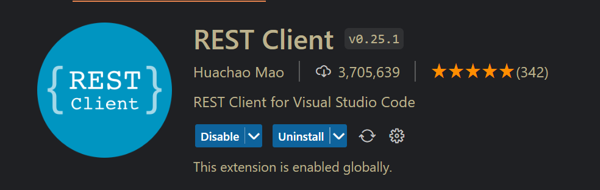
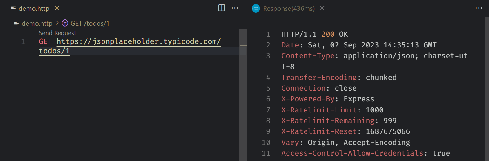
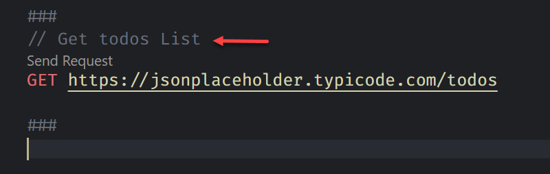
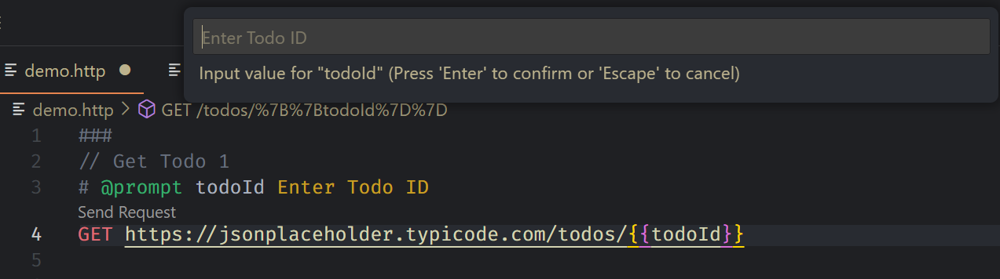
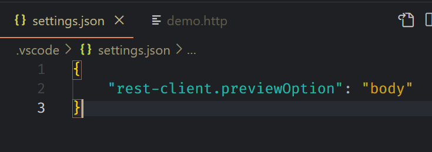
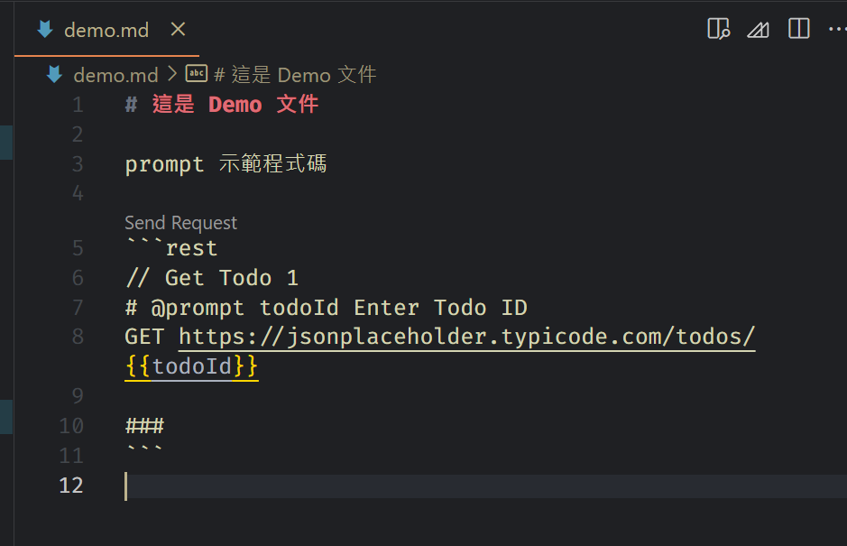

除了 Postman，在 VS Code 內還有其他類似的套件可以選擇，例如本篇筆記的主角 Rest Client

可以從 VS Code 的 extension market 內搜尋並安裝，使用方式也很簡單，只要檔名的結果是 .http 或是 .rest 都是 Rest Client 可以支援的檔案類型，先用一個簡單的範例作展示

真的很簡單使用，但當然不只有這樣，這篇筆記會記錄我在使用上的一些心得或技巧
筆記心得
-
Content-Type設定: 在做 POST 或是 PUT 時會傳 JSON 格式為 body 內容，這時候就需要設定Content-Type，設定方式如下1
2POST https://jsonplaceholder.typicode.com/todos
Content-Type: application/json -
可使用
###來分隔 Request 內容 -
#或是//可用來寫註解  -
自定義變數
-
Environment variables 可定義在 VS Code setting 內，這種變數可以跨檔案使用
-
File variables: 定義在
.http檔案內 -
Request variables: 將 Request 的內容存在
Request variable內，供同一個檔案內的其他 request 使用，# @name <<request name>>或是// @name <<request name>>定義 request variable -
透過
# @prompt {var1} {description}或是// @prompt {var1} {description}定義，可讓使用者輸入變數值  -
透過
{{ variable }}來使用 variable -
範例
1
2
3
4
5
6
7
8
9
10
11
12// File variable
@baseUrl = https://example.com/api
// Request variable
# @name login
POST {{baseUrl}}/api/login HTTP/1.1
Content-Type: application/x-www-form-urlencoded
name=foo&password=bar
// 使用 Request variable
@authToken = {{login.response.headers.X-AuthToken}}
-
-
設定 Response Preview 內容，在 VS Code 設定檔內，可以設定
previewOptionOption Description full Default. Full Response is previewed headers Only response header body Only response body exchange Preview the whole HTTP exchange 
-
在 Markdown 內也可以被使用，當使用 code block 時，只要標註為
http或是rest時，REST Client 套件也能認得並可以被執行，要留意的是，該動作沒法再 preview 的畫面上執行，必須是在編輯md檔時。變數設定在不同的 code block 一樣可以被吃到，只要是在同一份 markdown 檔案內即可